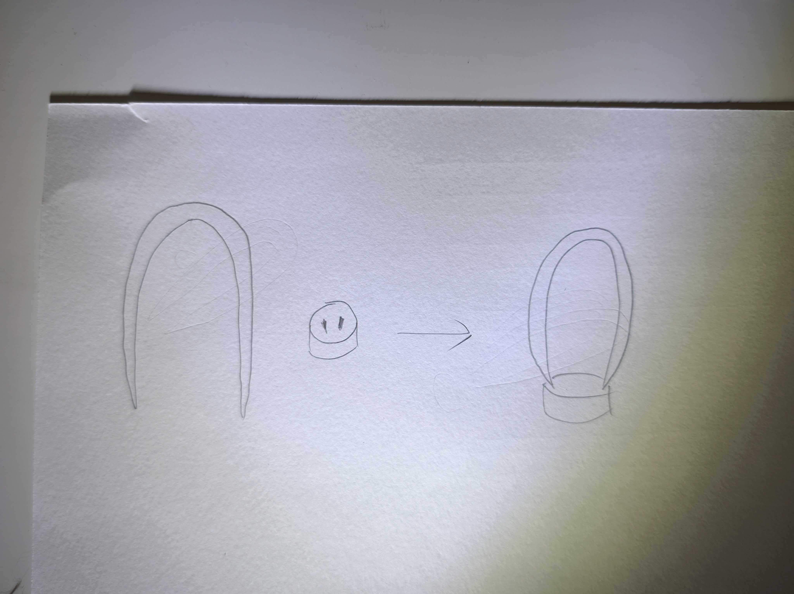
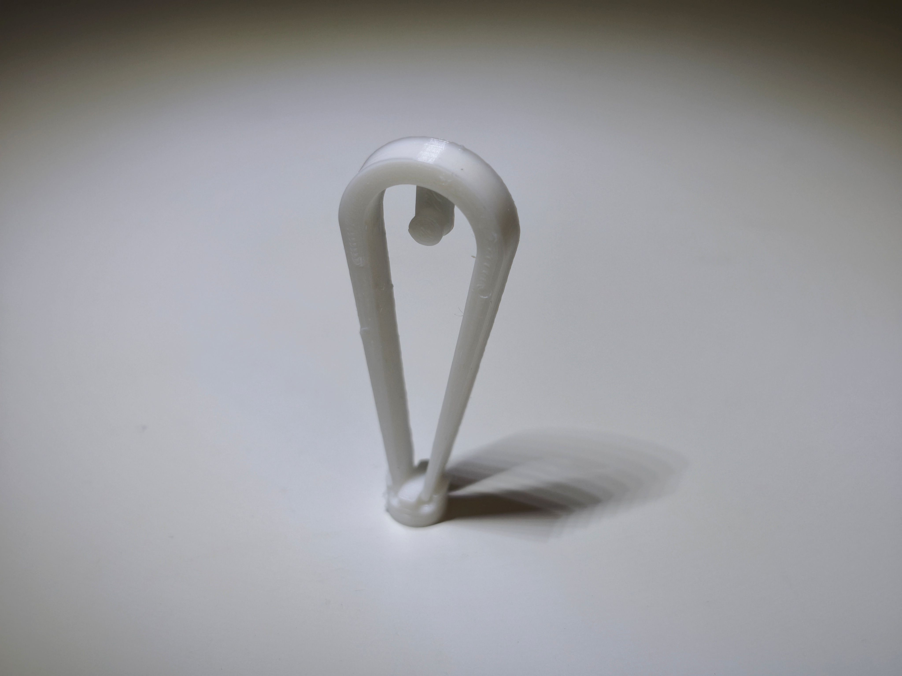
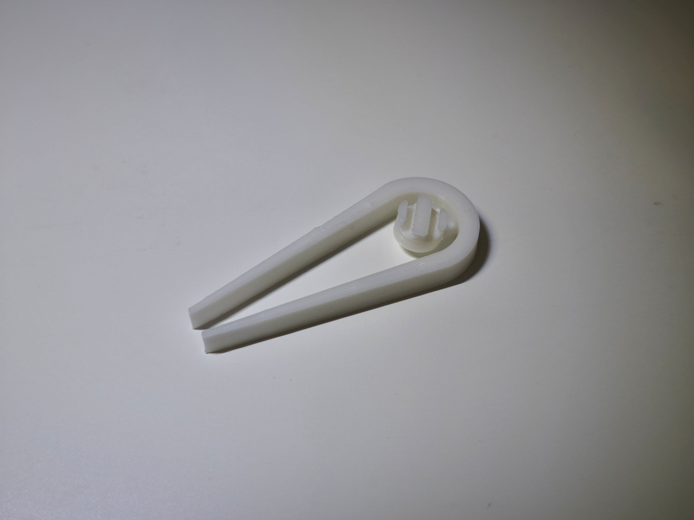
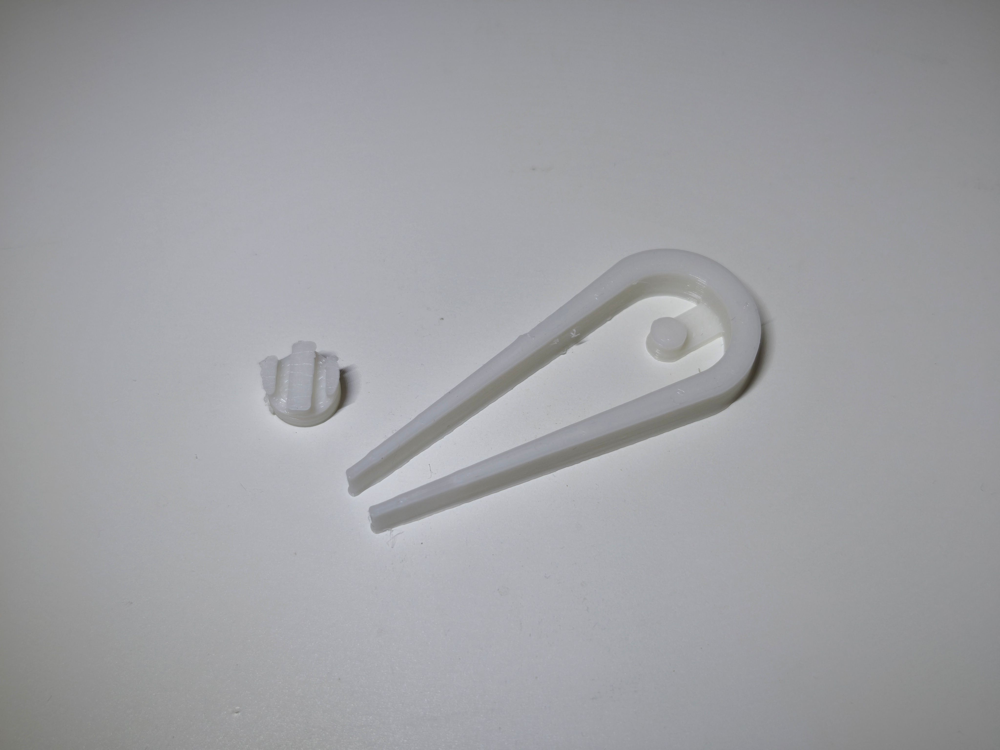
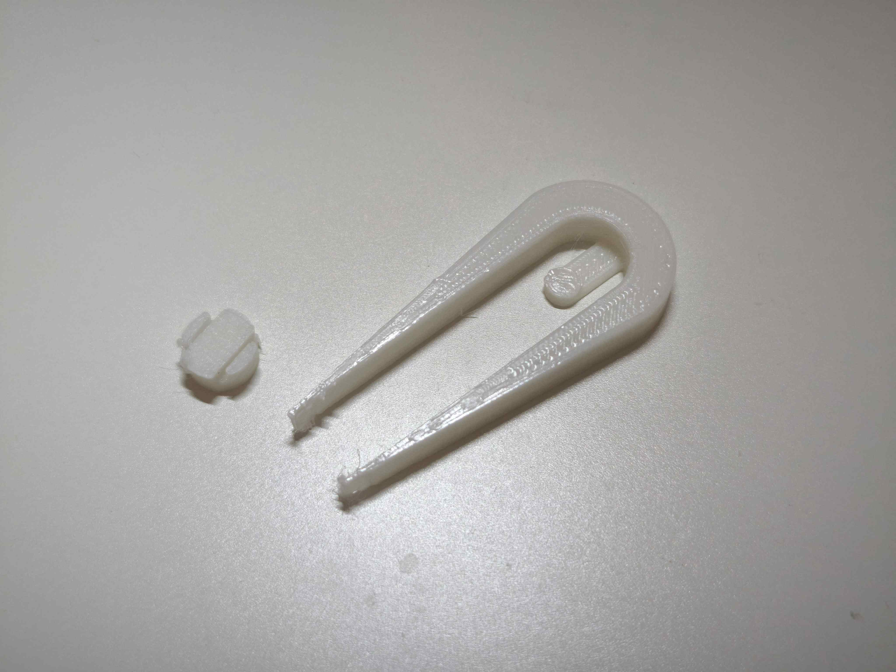

作品名 立つピンセット




ピンセットのstlファイル
作品の説明
先端保護も兼ねた台座にピンセットを刺して、インテリアのように立たせることができる。
台座が小さく無くしやすいので、使っている間に無くさないよう本体に格納できる。
制作理由
ピンセットなどをはじめとした工具は、工具箱の中などの目に見えない場所にしまわれてしまっている。
そこで、生活の中に溶け込めるオブジェにも見えるようなピンセットがあったら面白いのではないかと考え、制作した。
ついでに普段ピンセットの先のカバーをよく無くすので、無くさないように台座を本体に付けられるようにした。
調べたこと
元々趣味でCADを少し触っていたので、今回の制作にあたって特に何かを参考にすることはなかった。
作りたいものの大体の形をスケッチしてオブジェクトを作った後、それに突起を加えたり穴を開けたりして完成させていくことが基本となる。
代わり（になるか分かりませんが）にCADを触ってみようと思ったきっかけの動画を貼っておきます。
モデリングで意識したこと
難しい形を作ろうとするとモデリングや印刷難度が上がるので、
できるだけ単純な直線と曲線で、サポート材を使わずに出力できるよう空中に浮く部分が最低限になるように意識した。
使用している様子
試作品

本体と台座の穴の精度がどれぐらいあるのかと、どれぐらいの細さまできれいに印刷できるかを見たかったので、
穴と突起を同じ直径にして、ピンセットの先端をとても細くした。
この結果から、厚さが1mmあれば印刷がガタつかず、強度もすぐには折れない程度にはできること。
加えて、穴は正円にはならず凹凸ができるため、やすりで整える必要があることが分かった。